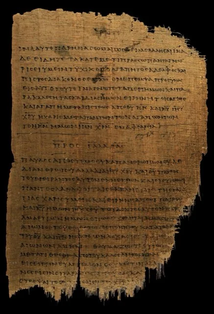
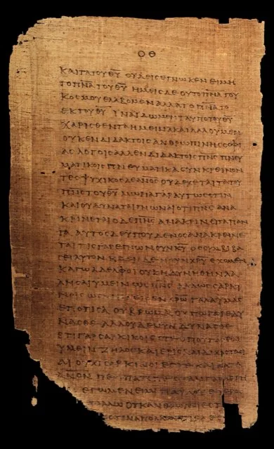
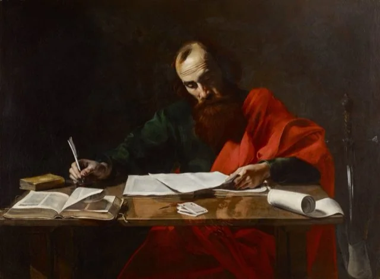
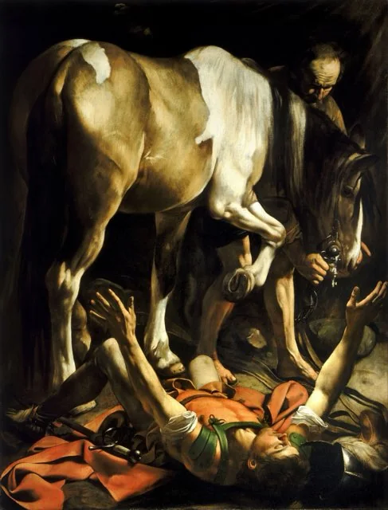
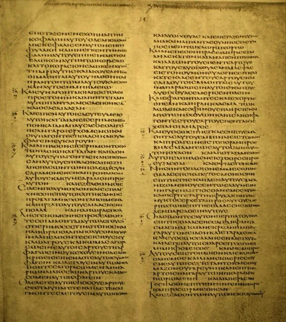
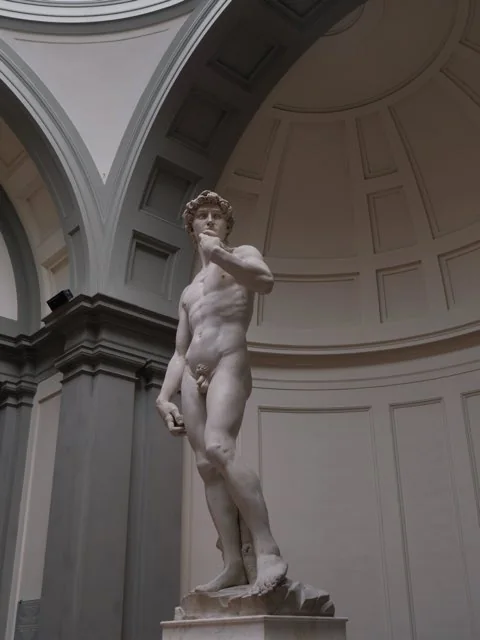
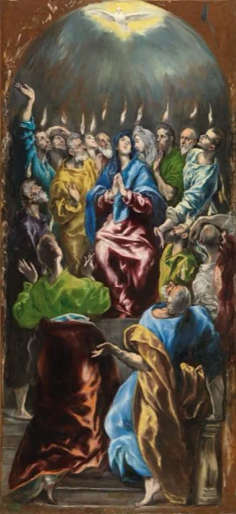
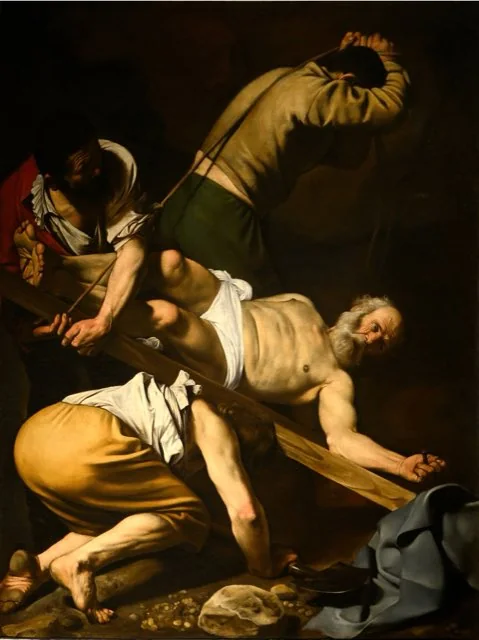
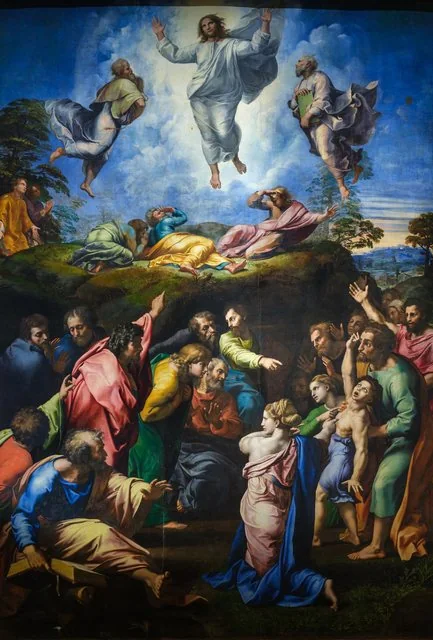

The letters of Paul
13 writings-
 AD 50c. AD 50–51
AD 50c. AD 50–51
Paul’s First Letter to the Thessalonians
Paul
Probably the oldest surviving Christian writing, c. AD 50–51, sent by Paul to the young church at Thessalonica about twenty years after the crucifixion. He takes it as known that Jesus died and rose again, and looks for his return.
→ -

AD 52c. AD 48–55Paul’s Letter to the Galatians
Paul
Paul’s forceful letter to the churches of Galatia, from the late 40s or 50s AD. In it he tells, in the first person, how he stayed with Peter in Jerusalem and met “James, the Lord’s brother”, among the earliest references to Jesus’s family.
→ -

AD 54c. AD 53–55Paul’s First Letter to the Corinthians
Paul
Paul’s letter to the church he founded in Corinth, c. AD 53–55. It preserves the earliest written account of the Lord’s Supper and, in 15:3–8, an older summary of Jesus’s death, burial, resurrection and appearances that Paul says he had “received”.
→ -

AD 55c. AD 55–56Paul’s Second Letter to the Corinthians
Paul
Paul’s second surviving letter to Corinth, c. AD 55–56, written in a season of strain. It defends his apostleship and recalls his escape from Damascus under King Aretas, an episode that helps anchor Paul’s early chronology.
→ -

AD 57c. AD 55–58Paul’s Letter to the Romans
Paul
Paul’s longest letter, written c. AD 55–58 to a church he had not yet visited. Its opening preserves what may be an older confession: Jesus born of David’s line “according to the flesh” and declared Son of God by the resurrection.
→ -
 AD 57c. AD 54–62
AD 57c. AD 54–62
Paul’s Letter to the Philippians
Paul
Paul’s warm letter from prison to his first church in Europe. Its hymn to Christ (2:6–11), possibly older than Paul, shows that within about twenty-five years of the crucifixion Jesus was being confessed as Lord.
→ -
AD 55c. AD 55–62
Paul’s Letter to Philemon
Paul
Paul’s shortest letter: a personal appeal from prison on behalf of Onesimus, an enslaved man who had become a believer, to be received as “a beloved brother”. It is first-hand evidence of an early house church.
→ -
 AD 70c. AD 55–62 if by Paul; otherwise c. AD 70–80
AD 70c. AD 55–62 if by Paul; otherwise c. AD 70–80
The Letter to the Colossians
Traditionally Paul; authorship disputed
A letter of Paul and Timothy to the church at Colossae, received as Paul’s by Irenaeus and the early church. Its hymn-like passage (1:15–20) calls Christ “the image of the invisible God”, through whom God made peace “through the blood of his cross”.
→ -
 AD 85c. AD 60 if by Paul; otherwise c. AD 80–100
AD 85c. AD 60 if by Paul; otherwise c. AD 80–100
The Letter to the Ephesians
Traditionally Paul; authorship disputed
A letter of Paul from prison on the unity of Jews and gentiles in Christ, received as his throughout the early church. It presents Christ as the one who reconciles both “in one body to God through the cross”, with the church built on him.
→ -
AD 75c. AD 50–52 if by Paul; otherwise c. AD 80–100
The Second Letter to the Thessalonians
Traditionally Paul; authorship disputed
Paul’s second letter to Thessalonica, received as his by Irenaeus and the early church. It answers a claim that “the day of Christ has already come”, evidence of early debate over the timing of Jesus’s return.
→ -
AD 100c. AD 90–110 (60s if by Paul)
The First Letter to Timothy
Traditionally Paul; most scholars: a later follower
One of the Pastoral Letters, addressed in Paul’s name to his co-worker Timothy and quoted as Paul’s by Irenaeus. It contains a short hymn about Christ and refers to Christ Jesus “who before Pontius Pilate testified the good confession”.
→ -
 AD 100c. AD 90–110 (60s if by Paul)
AD 100c. AD 90–110 (60s if by Paul)
The Second Letter to Timothy
Traditionally Paul; most scholars: a later follower
Presented as Paul’s last letter, written from prison as he faced death. Its summary of the gospel, “Jesus Christ, risen from the dead, of the offspring of David”, echoes Romans 1:3–4 and shows what was handed on as essential.
→ -
 AD 100c. AD 90–110 (60s if by Paul)
AD 100c. AD 90–110 (60s if by Paul)
The Letter to Titus
Traditionally Paul; most scholars: a later follower
The third Pastoral Letter, addressed in Paul’s name to Titus, left in Crete to appoint elders. Mostly about church leadership, it looks for the appearing of “our great God and Savior, Jesus Christ”, a verse much discussed as evidence of belief.
→
The Gospels and Acts
5 writings-

AD 70c. AD 65–75The Gospel of Mark
Anonymous; traditionally John Mark
The shortest Gospel, which the earliest tradition traces to Mark, the interpreter of Peter. Its fast-moving account of the ministry in Galilee and the passion in Jerusalem, c. AD 65–75, gave Matthew and Luke their framework.
→ -

AD 85c. AD 80–95The Gospel of Matthew
Anonymous; traditionally Matthew the apostle
The Gospel most read in the early church, attributed from the second century to Matthew the tax collector, one of the Twelve. It presents Jesus as Israel’s Messiah and teacher, with the infancy narrative, the Sermon on the Mount and scripture fulfilled.
→ -
 AD 85c. AD 80–100
AD 85c. AD 80–100
The Gospel of Luke
Anonymous; traditionally Luke, companion of Paul
The first volume of Luke–Acts, attributed from the second century to Luke, the physician and companion of Paul. Its prologue describes its own method, drawing on eyewitness tradition, and it adds the infancy narratives, many parables and the Emmaus appearance.
→ -

AD 85c. AD 80–90The Acts of the Apostles
Anonymous; traditionally Luke
The second volume of Luke–Acts, attributed from the second century to Luke, companion of Paul: the earliest narrative of the first Christian communities, from Jerusalem under Peter and James to Paul’s arrival in Rome.
→ -
AD 95c. AD 90–110
The Gospel of John
Anonymous; attributed to the beloved disciple
The Fourth Gospel, which Irenaeus and the early church attributed to John the apostle, the “disciple whom Jesus loved”. Largely independent of the other three, it opens with the Word who became flesh and sets the ministry across several Passovers.
→
The general letters
8 writings-
 AD 80c. AD 60–90
AD 80c. AD 60–90
The Letter to the Hebrews
Anonymous
An anonymous sermon in letter form, c. AD 60–90, which some early churches ascribed to Paul and Origen said only God knows who wrote. It presents Jesus as the Son and heavenly high priest, who prayed “with strong crying and tears”.
→ -
AD 80before AD 62 if by James; otherwise c. AD 70–100
The Letter of James
Traditionally James, brother of Jesus; disputed
A letter of moral teaching from “James, a servant of God and of the Lord Jesus Christ”, traditionally the brother of Jesus and leader of the Jerusalem church. Many of its sayings echo the Sermon on the Mount.
→ -

AD 85c. AD 75–95 (before c. 65 if by Peter)The First Letter of Peter
Traditionally Peter; authorship disputed
A letter from “Peter, an apostle of Jesus Christ” to Christians in Asia Minor facing hostility, used by Polycarp and accepted throughout the early church. Its writer calls himself a witness of Christ’s sufferings and reads the cross through Isaiah 53.
→ -

AD 110c. AD 100–130The Second Letter of Peter
In Peter’s name; widely regarded as pseudonymous
A testament in the name of Simon Peter, appealing to his presence at the transfiguration: “we were eyewitnesses of his majesty”. Slow to win acceptance and listed by Eusebius among the disputed books, it is usually dated c. AD 100–130.
→ -
 AD 100c. AD 90–110
AD 100c. AD 90–110
The First Letter of John
Anonymous; traditionally John the apostle
A treatise from the circle of the beloved disciple, attributed from the second century to John the apostle. Written to a divided community, it proclaims what “our hands touched” of “the Word of life” and insists that Jesus Christ came in the flesh.
→ -
 AD 100c. AD 90–110
AD 100c. AD 90–110
The Second Letter of John
’The elder’; traditionally John the apostle
A brief letter from “the elder” to a congregation, which Irenaeus quotes as the work of John, the Lord’s disciple. It warns against deceivers who do not confess that Jesus Christ came in the flesh, making his real humanity a test of belief.
→ -
AD 100c. AD 90–110
The Third Letter of John
’The elder’; traditionally John the apostle
A private letter from “the elder” to Gaius about hospitality to travelling missionaries who went out “for the sake of the Name”. It does not name Jesus, but it opens a window on the life of the early congregations.
→ -
AD 90c. AD 50–100
The Letter of Jude
Traditionally Jude, brother of Jesus; disputed
A short, urgent letter from “Jude, a servant of Jesus Christ, and brother of James”, traditionally one of the brothers of Jesus. Accepted in the Muratorian fragment, it quotes 1 Enoch and was reused in 2 Peter.
→